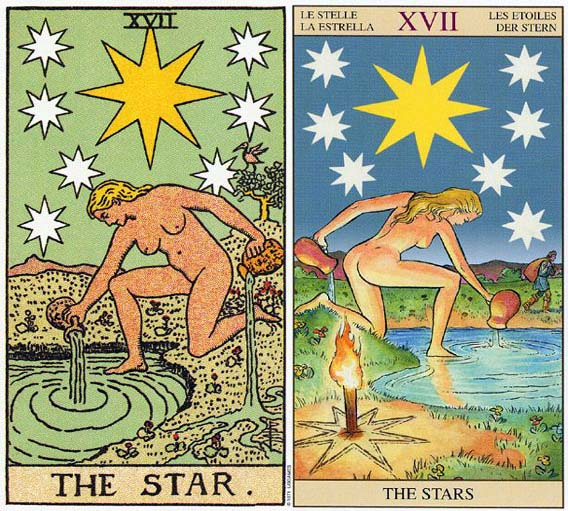

塔罗牌星星解释。当你经过了塔牌，对你来说，内心魔力的旅程已经走到了终点，生命力量的释放，也最终迎来了高塔的坍塌。这两条路都让你走死了，眼前，无路可走。每个人活着，都是一种能量的释放，是对环境的付出。而你和他们不一样，你已经没有东西可以付出了。你的注意力集中在自己身上，这时，就可以得到一些前所未有的好东西。一起来学习塔罗牌知识吧，今天是学习星星。塔罗牌星星档案
相关词：宁静、和平、希望
四元素：风元素
对应人物：Pandora
对应占星：水瓶座
含义：灵感、希望、兑现。
加强牌：倒吊人、星星、审判、权杖三
优点：前途光明、充满希望、想象力、创造力、理想的对象、美好的恋情。
缺点：挫折、失望、好高骛远、异想天开、仓皇失措、事与愿违、工作不顺心、情况悲观、秘密恋情、缺少爱的生活。
每月17日-星星。塔罗牌大阿卡那的第17张是“星星”，画面上是一位赤身裸体的少女，在星空下一边把清新的池水浇灌在焦干的土地上，同时用另一枝榴子使死水复苏。她代表世间生命的光荣，但也代表了受物质与感官的奴役。因此，天空的星星永远在提醒她：别忘了还有一个更高层次的精神世界存在。
相关传说：工匠之神Hephaitos奉Zeus之命用黏土和水做出来的第一个女人。 有着和女神同样美丽的容貌，但没什么智慧，有点顽皮。Hermis将背信放入她的心，将谎言放入她的口中。Zeus将她送给Prometheus的哥哥Epimetheus，嫁妆是一个大箱子。Emimetheus本来想拒绝，但看到哥哥被惩罚，赶紧和Pandora结婚。Prometheus警告Emimetheus不要打开箱子，Emimetheus也警告Pandora。 但是Pandora实在禁不起好奇心的驱使，打开了箱子。于是年老、辛劳、生病、肮脏、罪恶和痛苦都飞出来，只有希望还在箱子里。
塔罗牌星星牌面故事
天空中有天狼星，或是东方三贤者之星，旁边有七颗小星星围绕着。下面一个全裸的女性，左脚在地上，右脚在水面上。她把两壶生命之水到处，灌入地面和池中。不远的枝头上有一只鸟。代表永恒的青春和美丽。星星代表信心和希望，土地代表意识，水池代表无意识。鸟代表心灵的升华，裸女代表真实的面目。分散成五条支流的水代表人的五种感觉。白色裸体下跪的少女，披着长发在肩上，背后有明亮的天狼星。少女将手中两壶水倒入池中，一往海洋，一往大地之母，汇流成河，滋润我们。少女的一只脚即将侵入水中，代表进入潜在的领域。停在枝头上的是不死鸟，代表永生不朽。天空有一颗大星和其它七颗星，代表信念和爱的女神及她的女仆。沉浸在星光下的少女象征永恒的美与希望。
塔罗牌星星牌面解释
解读一
白色裸体下跪的少女，披着长发在肩上，背后有明亮的天狼星。少女将手中两壶水倒入湖中，一往海洋，一往大地之母，汇流成河，滋润我们。少女的一支脚浸在河中，代表进入潜在的领域。停在枝头上的是不死鸟，代表永生不朽。天空有一颗大星和其它七颗星，代表信念和爱的女神及她的女仆。沉浸在星光下的少女象征永恒的美与希望。
解读二
星星代表信心和希望。土地代表意识，水池代表无意识。鸟代表心灵的升华，裸女代表真实的面目。分散成五条支流的水代表人的五种感觉。
解读三
天空中有天狼星，或是东方三贤者之星。（l'etoile flam boyante）。旁边有七颗小星星围绕着。下面是一个全裸的女性，左膝在地上，右脚在水面上。她把两壶生命之水倒出，灌入地面和海中。不远的枝头上有一支鸟，有些是花上有蝴蝶。代表永恒的青春和美丽。
这是一张充满希望的牌。在希望之星——天狼星的照耀下，希望女神把圣水瓶中的希望圣水倒入象征潜意识的水池中。她知道人们是如此地需要希望，所以当一瓶圣水倒完时，她又在倒另一瓶。只要有希望人们才能有足够的动力去完成许多事，所以说希望就是人类的活力之源。
让我们奉献出所有的爱，尽管是在黑夜但漫天的星星给我们指引方向，在星光的指引下走向光明的未来。星星的含义中还有一点是很容易被忽略的，这就是“怀孕”的意思。
通常，生日塔罗牌阵中若有这张牌，则代表此人踏实的创造力，有卓越的筑梦本能，经常能自己打造梦想并按计划完成。这是个开朗喜悦的牌面，又有全然投入的专注与热情，是绝佳的创意总监，不会任意制造无法完成的梦幻。
星星与月亮都是爱作梦的大阿卡纳，最大的差异，则在于前者务实而后者梦幻。星星是一号魔术师与七号战车的组合，显然谕示了无与伦比的行动力与执行力。
星星是风象属性的宝瓶座Aquarius，是个热爱哲学思考的星座，随时随地都有许多出人意表的点子，且不断地实验检测，来证明自己的想法绝非空穴来风。星星与水瓶座的结合，实在是天作之合，让许多艺术家不得不跌破眼镜，真正的创意，竟然是来自于严谨的哲学思考？梦想绝非随意涂鸦的随笔，逻辑，才是实践的绝对动能。
这也是爱的幸运之星，代表爱情、疗愈与感官幸福的女神，在八颗闪烁耀眼的星星之下，将生命之泉倾注于大地；与八号的钱币五芒星，有异曲同工之妙，同时象征着努力耕耘而取得丰盛成果。一加上七的踏实筑梦，正是八这个数字的绝佳代表，纯然的公平正义。
被七颗行星围绕的闪烁之星，带来大地自然的愉悦赐福，而辉耀着希望的礼物。这来自天上的甘泉，正藉由天使无条件的爱之泉源，缓缓流到人间。向内探索的天生自然引力，将焚烧过往不愉快的妒恨，而提炼出真诚的自我，重新灌注天堂的幸福源泉，净化人间烟火。反面牌谕示着低估自我存在的价值感，需要亲友的激励与挑战。伴侣之间的忠诚，将支撑彼此往幸福之路迈进，而双方适度隔离的时间与空间，是亲密关系建构的必要条件，也是实践理想的必须进程。
塔罗命盘中拥有星星的人，绝对是无比幸运的佼佼者，永远活在单纯而惬意的梦想中，不论是否能够圆梦，在构筑的过程中，早已享尽了无比的喜悦，也总能用最愉快的心情，去看待这坑坑疤疤的人生。我见过许多出现星星数字的人，脸上有一般人少见的天真与开心，仿佛人世间的灾难，总是打身边过，闪电也不会直接扑上身，比幸运之轮还要幸运的吉星，莫过于此。
不要放弃正面的期望，也勿需过度认真执着，轻松地活在当下，等待适当时机的征兆出现。这么多的星星来指引，绝对不会让你期待过久，更不会让你的努力落空。
塔罗牌星星牌义解释
这张牌意味着前卫的思想，新的知识，希望与理想，预示着诺言的兑现，灵感与精神之爱。我们应该当运用内心的平和与澄明创造新的生活方式，在这个过程中你要倾听内心的声音，相信自我，无须再自我欺骗，自我抗争，而是要创造维护自我的尊严与信息。星光通向宇宙的智慧，显示神灵的神秘与深邃。
这张牌所要传达的，就是希望我们能够毫不吝啬地尽心付出我们的真爱，借此来培养希望，迈向光明的未来。只要能够相信未来，就一定能够达到目标。因此，星星会不停地闪耀光辉，前途必将是一片光明。
塔罗牌星星解牌参考
正位
1.具备了全新的创造力。
2.光明的前景。
3.爱情即将有结果，两人都有非常幸福的感觉。
4.身体健康。
5.心中的愿望获得了成功。
6.想象力丰富。
逆位
1.让人疲乏的爱情。
2.运气不佳。
3.得不到的爱情。
4.创造力缺乏，没有灵感。
5.内心感受不到希望。
6.友谊不顺利，想要断绝来往。
7.脾气顽固不化。
8.还没有实现的愿望。
塔罗牌星星正位释义
1.工作学业：有独特的创造性、能达到极高的目标、事业蒸蒸日上、学业前景乐观、对课业充满好奇心、因独特的读书方式从中受益。
2.健康生活：身体状况绝佳。
3.其他：适合前往生态环境良好的地区、对文化古迹略感兴趣、偏爱艺术、获取专利。
4.人际财富：有新的财源、凭直觉可获得意外的收入、与兴趣相投的朋友交往愉快、得到相辅相成的友谊、遇到十分理想的朋友。
5.基本含义：愿望得以实现、充满无穷的创造力、萌发灵感、理想主义者、前景光明。
6.恋爱婚姻：遇到理想的恋人、从友人转为恋人、迸发爱的火花。
7.前途光明、充满希望、想象力、创造力、幻想、满足愿望、水准提高、理想的对象、美好的恋情
8.当牌面正立时，代表当你在事业上得到希望的能量时，前途会无比光明。在感情方面，你对自己很有信心，对两人的关系也抱有乐观的态度，相信自己能把握主动权，并努力追求对方，你们很可能就是命中注定的那一对。
牌位分析:
1.良好伴侶，天作之合，他的創造力無限，你們在一起會擁有很多快樂的回憶，容易滿足又彼此包容
2.現在是愛情的好機會，或這是一段遠距離戀愛，是依靠書信，傳達情衷
3.相信心有靈犀，盡在不言中的感情態度。或者對方是一個喜歡研究神祕學，相信占星學的人
4.容易滿足的愛情觀，讓人更覺得值得寵愛。對方古靈精怪，你們有說不完的話題
5.相信第六感的愛情，尋找心靈伴侶，一見鍾情的純愛
塔罗牌星星逆位释义
1.健康生活：身心疲惫。
2.其他：适合相对清静的户外场所。
3.工作学业：虽然创意无限到头来却是一无所获、消息来源有误、得不到同事和上司的信任、考试受挫、期望过高、理想不切实际、需要改进学习方法。
4.恋爱婚姻：与对方无法心灵相通、面对恋情期望的太高、虽有进展但是却由于身心疲惫最终选择放弃、无法对对方产生爱意、期望落空、以貌取人、两人出现了难以解决的隔阂。
5.基本含义：缺乏想象力、幻想破灭、好高骛远、错失良机、固执己见、理想与现实两者无法兼顾。
6.人际财富：破财、没有得到预期的收益、自我意识过高、苛求他人、对朋友感到失望、无意义的攀谈。
7.挫折、失望、好高骛远、异想天开、仓皇失措、事与愿违、工作不顺心、情况悲观、秘密恋情、缺少爱的生活
8.当牌面倒立时，在事业上，你不要全部依靠别人的给予，因为你还有希望在心中燃烧，只有靠自己才有真正的发展动力。感情方面你俩无法彼此信任，感觉无法把自己托付给对方，也许你们退一步，都冷静一下就能找出解决问题的途径，因为答案就在你们的心中。
牌位分析:
1.太過虛榮的想法，會被一個華而不實的對象吸引，或表錯情，錯過理想對象
2.不能對機會期望過高，可能會因期待過度而迎接失落
3.溝通不良，對牛彈琴。拒絕對話，閉塞的冷戰
4.過度執迷在神祕學，把成敗丟給老天爺卻不努力充實自我。或不斷詢問別人想法卻下不了決定，缺乏自省能力，猶豫不決，錯失良機後才扼腕
5.實力相差太多，愛情與麵包不能兼顧，飢餓的愛情可能失敗
倒立的星星
星星倒立意味你目前并没有接触到你潜意识能量的来源，而且可能会觉得受限于生命，或和你创造力的来源失去联系。这张牌可代表一位艺术家或以创意为职业者，他似乎无法提出新的构想。目前你缺乏灵感，因为你触碰不到你的潜意识。
可能你会觉得需要休息一阵子，放个假，或有更多的自由，但是你所需要的应该是心灵的自由，而不是肉体的自由。当星星出现倒立时，意味着和生命或世界的灵魂联系被切断了。因此空虚、寂寞，或退却到智力中的情形均可能发生，这会缺乏“事情将来会获得改善”的信心。
它也可能表示你失去了你的目的，也就是你在这一辈子所应该做的事。事情既没有办法为你带来以往的满足，而你也无法给它们和以往一样的承诺。现在该是返回高塔的时刻了，这样你才能够排除那些与你生命不再有价值的东西，进一步发现一种和潜意识清晰、简单的连结。
塔罗牌星星大体上的意义
高塔牌除去某些你相信对生命有价值的东西，星星则是一张代表重新点燃希望的牌。它代表相信明天会更好的内在信心。你可以直接体验潜意识，而不是它的种种符号或意象。你可以体验这种强而有力的能量，并将它导入你的生命中。例如，艺术家利用这种能量来工作，以创作某些足以触动观赏者心情和灵魂的作品。它是一张代表信心、希望和内在平静的牌。
就普通角度来看，星星可能暗示一段假期或一段你能感觉不慌不忙、心平气和的时光。伴随这张牌而来的是一种“有余裕去思想及行动”的感觉。在这段期间内，你了解你就是潜意识和有形世界之间的联系。你选择什么东西来表现潜意识，完全由你决定，于是你最好的作品或最精彩的表现，是来自和潜意识最清楚的沟通。
塔罗牌星星两性关系上的意义
星星暗示你对这个关系有信心，相信事物都会是乐观的。你有足够的自由和空间，来实现你自己的命运，而且处于一种爱的关系中。星星可能是在形容一种对加强潜意识及意识世界之联系有帮助的两性关系。换句话说，在一个提供支持和自由的两性关系中，你可以生活在你的真理中，或做真正的自己。
这张牌可能是暗示和伴侣一起度假，或在结伴关系中，你拥有自主的空间和地位。因果循环也是这张牌的隐喻，所以你们很可能是命中注定要在一起的，或注定要经历在这段关系中，将显现的种种事件。
塔罗牌星星爱情
正位爱情
在你看来你们的感情是充满了希望的，似乎你们之间才刚刚开始，或许是刚度过了一次难题，也或许是才牵手才相遇，总之现在的你们双方对未来是充满了希望和期待的。只是相对来讲，你们的未来至少现在来看是虚幻的，未来再美好，那也只是你的幻想和期待，并还未成真，一切也都还没成为定数，现在的你们确实很好，但也要注意一直保持下去哦。
逆位爱情
没有希望的爱情往往让人觉得很沮丧，而你们正是遇到了这样的爱情。就现在的情况来看，你们的未来是很渺茫的，可能即使你们再如何努力都无法走到一起走到最后。虽然这仅仅是一个推断，但也是较为残酷的现实。不要去逃避没有未来的这一状况，要么好好享受还能在一起的这段时光，要么做好准备等待结束时刻的到来。
塔罗牌星星在工作方面的启示
充满希望的星星牌，代表生命中的理想。
星星牌不排斥世间的成功，却点醒人以“远景”。
有多久不曾谈过年少的理想？有多少次在人前附和嘲笑某些不够实际的人或想法？有多久觉得“梦”是自己没有权利拥有的一种东西？
管理学家提出“E型因子”理论，试图找出会让人产生“热诚”、“兴奋”、“生气勃勃”等心理的事物。但是，很可惜“E型因子”无法像注射点滴一样，从外界予取予求。
我们必须自己找到它。你可以说它是理想、志向、志业、梦、成就感或任何其它。我们得忘掉公司简介或员工手册，自己“生”出它。
塔罗牌的星星牌，在神话中代表穿着天衣掌管众星的女神，遣送一个个灵魂下凡为人，在他们历经循环后，将灵魂接回天上休息。
我们在地球上劳苦奋斗，必须有这一份“超越性”的意识，才能不成为一个被手链脚铐锁在红尘中的灵魂，所有已经完成或正在做的事，也才可能有让别人和自己尊重的价值。
星星牌是对资本主义下的人类的大提醒，是失去了纽约世界贸易双子星塔后，依然该有的精神憧憬。
英国当代最知名管理学家查尔斯•韩第在《组织寓言》一书中提到，英国一项颇具代表性的测验结果显示，人们最想从工作中获得的东西前六名依序是：“个人自由、赢得同事尊敬、学习新事物、新挑战、完成任务、帮助他人”。
令人惊异地，受访者把“钱”放在第二十四位。韩第据而指出金钱无法买到人们“一种能在世上留下记号的成就感，一份能证明他们自己并非平庸之辈、而是能有所作为的证据”。
果真如此，星星牌中的女神在做的，就是不断从地球的河流中，汲引出足够的清澈回到天上成为星星——而那里面必定有很多人类“E型因子”的结晶吧。
我们常批评不热爱工作、敷衍了事、照章办事的人有“公务员心态”，其实民间企业也多的是“混吃等死”之徒。
他们不看星星，也不照镜子，躲在自认安全的壳中，任由生命力萎缩。
塔罗牌星星占卜应用
星星的作用～是一种希望，也是一种指标，也表示目前是晴朗的夜空。那颗星星就是希望之星，那位女子就是拯救的母亲，这张牌是光明的愿景，希望与救赎，净化与安宁。是我们内心憧憬的投射，也是这些心愿的达成。
这位女神深具母性的光辉，她是「伟大的母亲」the Great Mother，照顾滋补养育万物和人类。她关注人的物质和精神层面，是细心和宁静祥和的。她更是不朽的美丽中的光芒，永恒的青春和美丽，带来永生不死和内在光芒的证明，更是一种真理的形象化the type of Truth。星星女神会带给你一切，无论是哪一位。那麽，也可说那颗星是金星，爱与美的女神，这张牌当然更是养颜美容之牌。
女神的姿势像是正在检视着他所拥有的珍宝物，所倾倒灌注的液体，是天堂的物质和元素，是「灵魂之水」waters of the soul，「生命之水」Waters of Life来自於天上，来自於那颗星。这液体是净化之水，从女神的水瓶里倒出来的，而其实是天上的产物，从星引导下来的，对我们人类而言，是「精神的礼物」Gifts of the Spirit。圣水具有洗涤洁净的功效，能够净化心灵，也是一种精神的洗礼。而湖中的水，是承受接通星之女的圣水，而在心灵的深处被充满。
沙漠中的绿洲，是苦尽甘来的期盼，是灾後重建的希望，是人生救赎的挚愿。绿洲代表着美好的愿景，一切的希望，让你如愿以偿。光明的前景，充满信心和乐观，感到满足和愉悦。对人生充满憧憬。这是属於你的应许之地，愿望之泉，喜乐之源。绿洲内一定有湖泊，带给你实质的滋养滋润，湖边绵密的绿茵，让你安然憩息，体会温馨的感受。
远处低矮的山脉，象徵心理的屏障，给予保护的安全感。无花果树，是充满能量，以及静待预期的成果。不死鸟的重生与期待。朱鹭，所有相关象徵讯息。代表智慧之神Thoth，一切这位神只所掌管的衍生，文字文化，天文学、占星术。因为也代表魔法与心想事成，也相关於一切的好预兆。
这张牌也代表灵感和洞察力，水的清澈和透特神的智慧。这神奇的水，当然也是智慧之泉、灵感之泉。因为是愿望的应许，这个星，这个水，这个泉，是能够被当作什麽就是什麽，是心想事成的魔法元素。
就恋情而言：当然是很美丽浪漫温馨，不会太激情或热情冲动，是较和缓、纯洁而令人憧憬的，偏向精神性的恋爱，纯纯的恋情，初恋的感受。相处和谐愉快，爱情和表达沟通都很顺畅。更是美好的友情、温暖而长远的情谊。这张牌更可代表过去和现在的交融，是往日情怀的记忆浮现。
在其他方面，在欲望和工作、希望和成果等方面，都能达到适度和均衡。得到力量和救援，和力量牌不同的地方是，力量是从内而外，星星是从外而内。
天空中星体的排列，构成星象的营造，这就暗示了与占星有着相关。满天的星斗和所营造的新时代气氛，足以称为占星学的代表象徵。塔罗牌有三张天体的牌，这张牌代表太阳月亮之外所以的星体和天体，就是天上星星的代表牌，自是代表天文学和占星学。而在占算的时候，代表星象学上的影响力，也是时间和日子，因为七小星代表星期的计日方法。
塔罗牌星星(伟特塔罗篇)
这张牌与之前的塔相比，显得格外宁静与祥和。所以星星牌有纯净、净化、宁静、祥和之意。图中的裸体女子是灵魂的象征，该女子逐渐地将黑暗本质洗净清除，天空逐渐行星之阶梯便呈现出来。塔罗历史学家、符号学研究者Robert O’Neill指出，伟特在《The Secret Tradition of Alchemy》一书中写到过，暴风雨后的回报便是沉静。伟特塔罗牌的星星同样也是以马赛牌为模型，只是伟特牌中的女子不但将水分别地倒于地面和水池，而且她的双足也同样处于地面和水中，这点和节制牌同出一辙。星星牌中的女子正在完成Iris（彩虹女神和诸神的信使）的任务——培养、滋润这个世界。这里，内在世界与外部世界的连结要比节制牌中更加完善。水提供了一个更好的基础与立足点。在金色曙光对应体系中星星牌与水瓶座对应——同样亦是水的承载者。这里，是一个向更高境界提升的机会。
星星牌代表了一种突破，一线曙光，就好比突然之间看到了机会，暴风雨过后的沉寂，就像是惩罚之后的原谅，幻灭之后的觉醒、清澈与明净。
塔罗牌星星(古塔罗篇)
星星牌是塔罗中反映古西方人宇宙观中七大行星中的其中三大天体（星星、月亮、太阳）的一张牌。星星在大牌的3*7结构中处于第三阶段，第三阶段的大牌是最后一个阶段，而闪闪发亮星星的出现则代表离光明之源越来越近，也离塔罗大牌的最终目的地越来越近了。 在维斯康提-斯佛扎塔罗牌里，星星牌图中画着的是一个女人，她身穿蓝衣，蓝衣上还有一点一点的金色星星，她手持着一八芒星。这位女子对应希腊掌管天文的缪斯女神。文艺复兴时期也有与其类似的的作品，著名的艺术家拉斐尔（1483－1520）曾在教皇朱利叶斯二世的图书馆天花板上画过类似的身穿蓝衣的女子，这位女子象征的是哲学与神学的连系、世俗与宗教的连系。意大利早期的木刻塔罗中的星星图像都有所不同。 十五世纪后期最普遍的图像就是描绘为一名手持六芒星的半裸女子。在同时期的罗森瓦德（Rosenwald）塔罗中，只有一颗处在云层中的八芒星。 在十五世纪晚期的印刷塔罗罗斯切尔德（Rothschild）塔罗牌中，在八芒星底下有三个人物，这三个人象征了东方三博士，在耶稣基督诞生的故事里他们跟随着伯利恒之星（又称圣诞之星或耶稣之星）找到耶稣。东方三博士这三个人物同样亦在佛罗伦萨塔罗牌中出现。
所以我们看到，设计塔罗的艺术家们在选取符号时，符号的来源不会只限于一种。 到了十七世纪，法国Jacques Vieville塔罗中，我们在牌图中看到的是一位天文学家。但是之后法国的Jean Noblet塔罗和所有的马赛系塔罗里，我们则发现最为普遍和常见的象征寓意图，一位裸体女子两手持着双杯，并倾倒着杯中的液体，她的一只脚触于地面，而另一只脚则触于水里。在该女子的上面，有一颗大八芒星，八芒星周围环绕着七颗小星星。这里我们稍微对里面出现的符号解释一下，裸体女子在新柏拉图主义理念中象征的是灵魂，而她上方的星星则是新柏拉图主义里行星的七重阶梯，而最大的那颗星星则象征的是天堂的入口。在女子的身旁有一只鸟，这是象征灵魂的另一种符号，而那只鸟所在的树亦是天体阶梯的象征符号。该女子用双手倾倒水杯的样子可以关联到启示录，启示录中一位天使站于陆地与海洋之间。在十七世纪，炼金术士同样将这个符号用于表现二元对立的联合：如干与湿、阴与阳、红与白、热与冷。 1659年炼金师瓦伦丁所著的《哲人之剑》（L’Azoth des Philosophes）里的一副图像，叫做“哲学家的塞壬（Siren of Philosophers）”，描绘了传说中的美人鱼，美人鱼是炼金术理念中象征新柏拉图主义中的世界灵魂（Anima Mundi）的符号。另外，象征世界灵魂的形象是索菲亚（Sophia，希腊语意为智慧）与阿弗洛狄忒（Aphrodite）,希腊神话爱与美之女神），所以为智慧与美集一身。美人鱼的胸前流出红白两色的液体，红色为血，白色为乳，流入水中，象征为炼金术中的三大要素融为一体：盐、硫、汞。
红色的血为阳性特质，意为受难、死亡与恐惧。白色的奶为阴性特质，哺育、生命与希望。而美人鱼作为这两者的源头，呈冷静状态，表示其超越恐惧与希望这两者。她代表了一种宁静与祥和，美人鱼的乳房及其象征意义可以对应到星星牌裸体女子倾倒的双杯。 来看另一幅图，这副图也是《哲人之剑》里的，这副图里我们可以看到七颗标有占星符号的星体。 这七行星代表新柏拉图主义中的七重阶梯，图中从左到右其依次为：金星、火星、太阳、水星、月亮、木星、土星。在行星阶梯之下，有几个象征二元对立的符号：双翼球体中正方形与三角形的组合符号、站在龙身上的国王与皇后组合体构成一个阴阳结合体，这个阴阳结合体中，国王手持圆规、皇后手持直角尺，与脚下圆形与正方形的组合呼应。另外，圆象征了天与灵，方象征了四重的物质世界。在阴阳结合体人物的左右侧分别为太阳和月亮，太阳和月亮的图形与其他行星明显有区别。太阳与男性的头像对应，而月亮与女性的头像对应，这象征太阳是阳性的象征，而月亮是阴性的象征。这将把我们带入下两张塔罗牌——太阳和月亮的话题。
塔罗牌星星解释网友问答
塔罗牌星星解释题一：关于塔罗牌星星
网友解答:塔罗牌大阿卡那的第17张是“星星”，画面上是一位赤身裸体的少女，在星空下一边把清新的池水浇灌在焦干的土地上，同时用另一枝榴子使死水复苏。 她代表世间生命的光荣，但也代表了受物质与感官的奴役。因此，天空的星星永远在提醒她：别忘了还有一个更高层次的精神世界存在。
塔罗牌星星解释题二：关于塔罗牌的【星星】
我知道【星星】代表的是希望 但是那个女神往湖里和地上都倒水 怎么看得出希望的呢
网友解答:正位就是有希望，逆位就是失望，希望在哪里？即使在漆黑的夜晚，也会有明亮的星光指引。即使在干涸的旱季，也会有女神灌溉，无论顺境还是逆境，未来总是充满希望的。
塔罗牌星星解释题三：塔罗牌爱情测试解读 自己 星星(正位) 对方 力量(逆位) 之间关系 恋人(正位) 未来趋势 正
塔罗牌爱情测试解读
自己 星星(正位)
对方 力量(逆位)
之间关系 恋人(正位)
未来趋势 正义(逆位)
网友解答:星星 代表你自身对这段爱情的希望.尽管恋人牌显示你们的关系现阶段处在良好阶段,但是星星却不像一个热恋状态的人.说明这段感情里面你还有未实现的愿望.
对方是力量的逆位.这预示着这段感情恶化的先兆.力量代表的是顺从.对方可能感受到这段感情中可能处于被动,可能是被形式所逼,而选择暂时的逆来顺受.逆位代表了这种外界力量的失控或者消失,那随之而来的就是放弃甚至不必要的冲突.
之间的关系是恋人正位.这张牌本来象征爱情的开花结果,但根据前面的来看,这里更多代表了谨慎选择对象的警告.或许这是一段代价很高的爱情.
未来趋势,正义逆位.同样是不太好的一张牌,代表了爱情和法律的冲突.一般情况如果你已婚,这张牌有离婚的不好含义.而对于未婚的人,出了需要检查婚外恋的危机以外,这张牌也代表了和这个人未来结婚过程中的障碍重重.
塔罗牌星星解释题四：塔罗牌占卜近期是否能怀孕抽到了正位的星星。
抽三张牌来测的，代表过去的那张，抽到的是逆位的太阳，代表现状的，抽到的是正位的星星。代表未来的，抽到的是正位的命运之轮。星星那张牌就代表有怀孕的意思，是不是近期能怀上宝宝呢？关于未来的那张命运之轮，有代表宿命的重逢的意义，是不是说明我未来的宝贝和我有宿命的缘分呢？
网友解答:逆位的太阳，感觉健康状况不是很理想，应该不全是生理上，可能也和劳心劳力导致的精神状态低落有关。有一些未知的阻力妨碍受孕。 星辰暗示有怀孕的希望和能力，说明想要孩子的思想准备充分，内心充满平静与爱意。但是正位的命运之轮虽有'重逢‘的含义，但是也可能有代表运势的逐渐低落，从健康方面来看，就是身体健康会有所影响。 总体感觉这个牌阵，大致是说开始虽有要孩子的想法，但并不强烈，所以没有达到目的。现在则做好了接受孩子的想法，并且各方面条件也都达到了。将来会有变动，这个变动并不会长时间影响结果，也就是会有孩子。 从母子双方的健康角度考虑，建议还是等女方身体再修养几天或一段时间，等到精神和健康状态都饱满的时候再选择要孩子。
塔罗牌星星解释题五：塔罗牌中的魔术师，隐者，星星在一起表示什么呢？
测的是和男友的感情，分别是过去 魔术师正位，他的想法 隐者正位，未来发展 星星正位，谁能帮帮我？谢谢！
网友解答:你好，这表示你和你男友的感情不错，星星是一张给人们带去希望的牌，预示着寓言的兑现和灵感与精神的牌，暗示人们不应放弃希望，只有自尊自信自强才能有所成就。恋爱前景光明，未来很有希望。
塔罗牌星星解释题六：塔罗牌测试怀孕结果是星星逆位
刚刚用塔罗牌测试是否怀孕，结果是星星逆位。请问这代表什么？谢谢！
网友解答:说实话，你要测是不是怀了不如问医生。你要是问生还是不生，问塔罗比较好。www.yw11.com这种显而易见的生理问题用占卜的方式真不合适，你要是拿这个来测试占卜的准确度就有点太“那个”了吧。 既然有结果，就说下吧。逆位星星：没有希望，希望不能达成。如果你希望是怀了，那答案就是没怀。反之，亦然。 正位恶魔：诱惑的果实。这 张牌看来，更像意外怀孕。
塔罗牌星星解释题七：有没有会解塔罗牌的？
测未来的感情
第一张是逆位的星星，第二张是逆位的吊人，第三张是正位的魔鬼，第四张是正位的正义。
网友解答:现在是没有恋爱的打算的其实，没有准备好进入一段两性关系而变得困惑：“我为什么无法去恋爱呢？”诸如这样的心路历程估计会持续一个比较长的时间。
或者会遇到一个比较现实的人，但是这个人不是你的恋爱对象，也许能够打破你对虚幻爱情的向往，建立一个相对现实的世界观。
塔罗牌星星解释题八：塔罗牌圣三角排阵算爱情，抽到命运之轮，星星，隐者。三张都是正位，麻烦给解释一下。
算两个人之间的感情状况，抽到了这三张牌，请问这段感情可发展吗？会有一个好的未来吗？麻烦大神给好好解答一下拜托了！（这段感情有点复杂，呃.....就是，性别相同，你懂的。所以结合这个背景来看希望能给出个好的解释和指引，谢谢）
网友解答:正位。。幸运的开端。如果是正位那么在爱情里就系那个当好了。
命运之轮说白了。也是轮回的意思。。看你怎么理解。
星星也是被忽略的意思哦。隐者也不用说了。
结合起来就是。可能不会有太多人支持吧。万事看人为。以求你们不要太露出。
个人理解。
塔罗牌星星解释题九：塔罗牌测试事业发展：用的是十字方阵,分别是世界（正）星星（正）愚者（正）正义（正）及恋人（逆）
最担心的就是最后一张牌，也就是代表结果的恋人（逆），我不是很理解整个牌阵所表达的深层次解读，恳求塔罗牌大人赐教。我奇怪，前4张都是正，为什么结果是逆?我很担心！
意思是说欲速则不达，成就是
需要靠慢慢缓行又稳健的步伐到达的，你现在的行为决定你的成功与否，不要幻想一步登天了。活在当下就该踏实做事。
塔罗牌星星解释题十：塔罗牌测试爱情帮我解释下谢谢阿 自己:星星 对方:星9 (逆) 关系:剑1 未来:权杖3 跟他
塔罗牌测试爱情帮我解释下谢谢阿
自己:星星
对方:星9 (逆)
关系:剑1
未来:权杖3
跟他分手了几个月 我还需要怎么做吗？
网友解答:人可以信命，但千万别认命，只要心里还有他，就要去做努力，相信如果真的忘了，也不会来百度提问，记住你的感觉比什么都准，希望我的回答能帮到你！
塔罗牌星星解释题十一：圣三角牌阵：过去：星星（逆位）现在：高塔（正位）未来：恶魔（正位）
圣三角牌阵：过去：星星（逆位）现在：高塔（正位）未来：恶魔（正位）
占卜问题是这样的,前段时间频繁失恋,工作也很不顺利,还丢失了一笔金钱,想占卜近期运势~
网友解答:个人觉得这么宽泛的运势占卜不是塔罗牌的强项.
如果非要解,看牌面,你最近的生活确实面临着较大的变化,而且是你无法抗拒也无法改变的.至于是哪方面的突变,因为你的问题太宽泛所以没办法具体化.
未来的恶魔表示你经过了现在的变化后,还是会找到自己的目标并为此投注全部精力.但是也很容易发展到沉迷其中自我束缚的境地.
塔罗牌星星解释题十二：这张星星牌是哪幅塔罗牌的？ 这张“星星”牌是哪幅塔罗牌的？如果我没记错的话这幅塔罗牌里的“世界”牌是有两个人头的
年份是..?
网友解答:希腊神话塔罗
塔罗牌星星解释题十三：塔罗牌的顺序是 恶魔（逆位） 力量（逆位） 正义（正位） 星星（正位） 皇后（正位）是十字形牌阵。问感情。 求高人解、拜托拜托！
网友解答:你们之间相处交流沟通十分契合，彼此观念也十分相近。相处愉快更近似于朋友的感觉。
但还没有去到那种彼此相互交融，情感依赖彼此的地步。
情侣之间一般要经过共同面对，共同经历，共同学习的历程，才会从心灵上真正升华。
让彼此都有种生命共同体的感觉，觉得自己不再是一个人了。
然后婚姻大事，男生会很看重长辈的意见，所以也无法自己作出决定。
塔罗牌星星解释题十四：塔罗牌第一张宝剑二逆位，第二张星星逆位，第三张权杖首牌正位，问婚姻，谢谢
网友解答:工作上似乎有一项需要你去做，但看来这项工作需要你做出一定程度的牺牲，你似乎需要好好商量一下！
塔罗牌星星解释题十五：塔罗牌，请各位大师帮忙解释一下哇
根据《 爱情圣杯五角占 》，你抽到五张牌中的
第1张塔罗牌是《皇帝》，代表本人的爱情态度，
第 2张塔罗牌是《月亮》，代表未来12个月的爱情运如何，
第3张塔罗牌是《正义》，代表恋爱贵人，
第4张塔罗牌是《死神》，代表爱情开运小秘方，
第5张塔罗牌是《星星》，代表爱情个性调整处方。
所以老师综合分析一下～
网友解答:皇帝:表示你对爱情是很向往的,但是有时会可能比较矜持,导致不那么主动~可能主动的那一方经常是对方,也可能你们两方都没有怎么主动过~所以你们的关系一直会停滞不前!~
月亮:表明之后你们的关系可能表面上很和谐,但是有一些潜在的危机需要去注意!~
正义:这个人是很果断的,处理事情没有一丝犹豫!~有他帮你做军师,你会得心应手很多~
死神:把身边一些不好的事情,或者麻烦的事情都终结了先,在把所有事情从新开始!~
星星:表示你应该按照你的心去走,你想去告白就大胆的去!~只要是你想做的~!就去做吧!~<星星>代表的天狼星会祝福你的!~
塔罗牌星星解释题十六：爱情塔罗牌抽中星星正位，正义逆位，女皇正位怎么解？
是相亲对象，对他很有感觉，可是他就有点。。。
算了一下，圣三角。
想知道意思
网友解答:你对这段也许会开始的恋情是否充满了期待？你希望自己能与他在一起。但他对你的态度又令你心生猜忌，他是不是喜欢你？在这个时候，相亲的模式本就为大多数人所抵触，他抵触的也许并不是你，而是一种他认为不公正的模式。你是个比较热情开朗的人吧。如果你继续持之以恒的表现你的好感，让他受到你的热情、欢乐、美的感染，他最终一定会走向你的身边。
【注意的问题】不要急于求成，在一起后，小心自己的嫉妒，那会给两人带来不必要的困扰。
塔罗牌星星解释题十七：塔罗牌二选一排阵，选择哪一个 前男友和另一个男生.本人情况杯七逆位，选前男友，状况是教皇 结果 星星
网友解答:选另一个男生，状况是魔术师，结果是审判逆位。 和前任分手加冷战，中间短暂复合了一个月，折腾了半年。我们从高中开始恋爱，大学异地恋，相处了五年。复合之后分手的原因是，他看到我在冷战期跟别的男生的短信，一起看过场电影。那个都没歪心思距离保持也很远，但我承认是我错我都改。但他就是说不能接受。然后两个月，他摔着了脑淤血我都不知道，然后住院期间可能跟别人好上了。现在对我说，了解我的性格，知道我肯定接受不了。回不去了,,, 其实我觉得还能接受的，只要他回到我身边. 关键是，现在吧，身边有一个我们以前的玩游戏里面的朋友,,,, 哎感觉对我很好，我挺喜欢被缠着不喜欢冷战... 虽然没说开始正式处，可是分开肯定会伤害到他啊. 关键是，我都不知道心里到底想要什么. 希望您能解答....不要骂我啊...
前路漫漫。想找一个对自己很好的人，真难。
塔罗牌星星解释题十八：塔罗牌，大阿卡纳。算爱情的。
我的心境：逆位的女祭司
他的心境：正位的星
外在因素：正位的恶魔
现在的关系：正位的月亮
未来的关系：正位的正义
我还能和他在一起吗？？？？？
网友解答:星星代表信心和希望，正位表示他认可你是他理想的对象。
逆位的女祭司则表示由于你的无知、贪心、目光短浅、自尊心过高自命不凡，让自己陷入了无法实现的相思。
正位的恶魔则表示你们的恋情受到外在因素的严重阻滞使你们意志薄弱，误入歧途，甚至被朋友出卖，而使爱情具有了盲目性。
月亮则表示你们的爱情迷茫、动摇、不安，缺乏安全感
未来的关系则要求你们能互相理解，明理，彼此要开诚布公，重视道德伦理，这样才能保证将来能性情相投。
追问：
那还会在一起吗？
追答：
坦诚相待能在一起，关键你的态度如何？
追问：
我对他没有秘密。我的所有密码他都知道。他每天都会查看。我不知道还要怎么坦诚。我对他没有秘密。该说的不该说的都说了。我朋友说我傻。。。。。
追答：
看来是他缺乏安全感喽，给他信心。
塔罗牌星星解释题十九：塔罗牌 17号星星是哪个人物？
塔罗牌由22张大阿尔克那牌和56张小阿尔克那牌组成，在22张大阿尔克那牌中名称为「星星」的牌表示下面哪个人物？
A.雅典娜 B. 哈迪斯 C. 赫拉 D. 潘多拉 E. 普罗米修斯
塔罗牌
网友解答:大秘仪塔罗牌的第17张是“星星”，画面上是一位赤身裸体的少女，在星空下一边把清新池水浇灌在焦干的土地上，同时用另一把勺子使死水复苏。她代表世间生命的光劳，但也代表了受物质与感官的奴役。因此，天空的星星永远在提醒她，别忘了还有一个更高层次的精神世界存在。
A.雅典娜
智慧女神和雅典城的守护女神
塔罗牌星星解释题二十：我带塔罗牌中的星星 对我有影响吗？
我是水瓶座的 我看在塔罗牌中 星星的代表星是 水瓶座 我带这张卡会对我有好出吗？ 在塔罗牌开牌仪式中 代表我这套的卡组的卡是愚者
网友解答:有关塔罗牌的解释都跟它的牌位有关
就是正位还是逆位
说白了就是牌面意思好的正位都通常都是好征兆
逆位就不是!
你说的开牌仪式和卡组偶不太晓得,也是头回听说星座和塔罗牌有关!